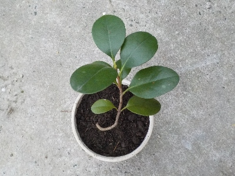
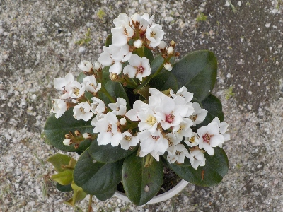

更新日 : 2024/03/17

ツヤツヤしてて濃い緑色の葉っぱなので、庭のサザンカのタネが落ちて目が出たんだろうと思ってました。
引っこ抜いて鉢植えにして育てることにしました。実生の花が楽しみです。
更新日 : 2026/05/04

最初サザンカって思ってました。その後トベラかなと思ったんですが、シャリンバイって名前の木のようです。
花数が多くてキレイですね。これはこのまま育ててもいいかも。
花が終わったら鉢を大きくしようかな。
鳥が運んできた木を育てるのは楽しいですね。
【おいしいものを食べよう。】【たくさん寝よう。】
【ソロ活をしよう!】【季節感のあることをしよう。】【動画視聴はほどほどに。】【当サイトの全てのコンテンツは無断転載禁止です。】